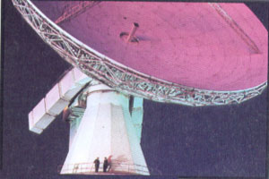
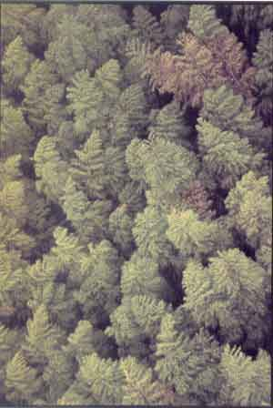
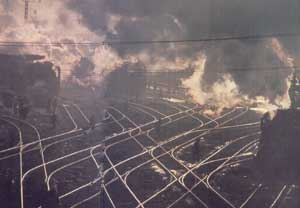
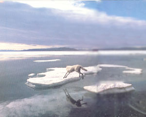
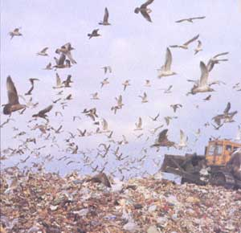
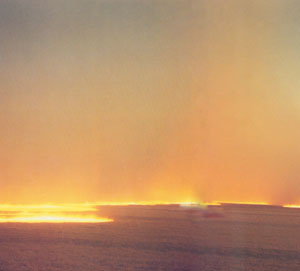
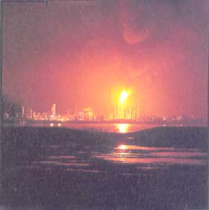
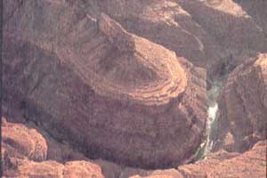
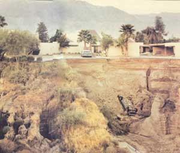
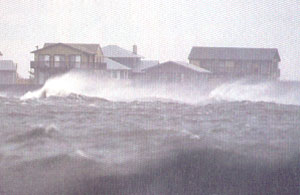

The Whole Thing Could Make You Sing?Or Weep.
March/April 1990
POSTCARDS FORM EARTH
Steve McCurry
A procession is like a dance, even while, as here, it is actually work. ( Niger , 1986)
Electronic images have radiated into space since the invention of television. But, as in picture books, the images are for our eyes only. Any extraterrestrial reception amounts to eavesdropping. Not this time. For by deliberately beaming these “postcards,” it is we earthlings who eavesdrop.
|
MAGNUM PHOTOS |
 H. Mark Weidman We talk, see, and listen with large dishes. (Earth station, U.K., 1982) |
 Hiroshi Hamaya We have grasses for carpets, and trees for umbrellas. (Kagoshima, Japan, 1960) |
|
 Hiroji Kubota Where there is coal there is also steel and steam to move engines. (China, 1983) |
 Jim Brandenburg Does the wolf reflect on whether the ice will hold? (Ellesmere Island, Canada, 1986) |
 Arthur Tress The gulls pick and choose through refuse at city's edge. (Jamica Bay, N.Y., 1987) |
|
 Richard Misrach A racing fire, no matter where, makes us recall something ancient. (California, 1985) |
 Arthur Tress The petrochemical refineries decorate our rivers, like shrines. (New Orleans, 1986) |
 Ernst Haas Rivers are sculptors, putting wavy lines into what is seen from afar. (Untah, 1962) |
|
 Joel Sternfeld Floods are less delicate, making ordinary life oddly collapsible. (California, 1979) |
 NASA The eyes visible from above are blind, but surrounded by fury. (Hurricane Gladys, 1968) |
 Dan Miller We are in love with waves, though not when driven by Gale Force Io. (Atlantic City, N.J., 1968) |